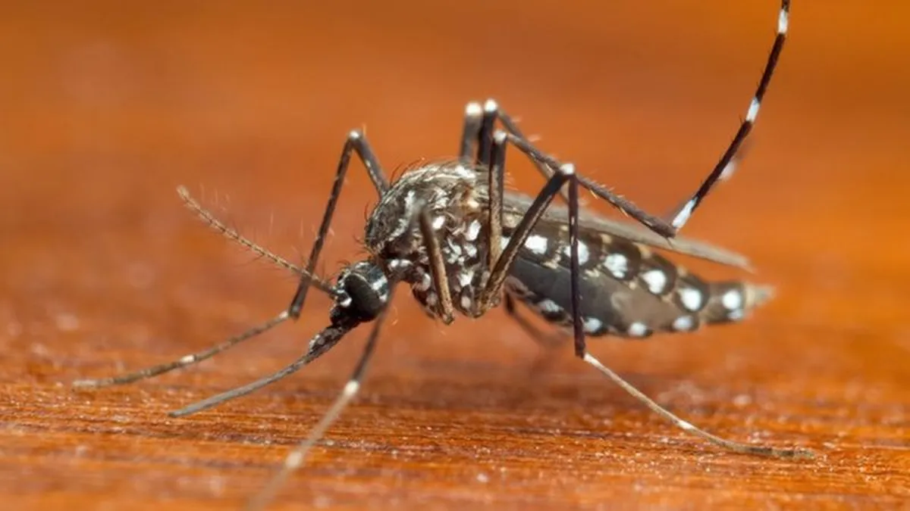

Últimas Notícias
Educação
Saúde
Meio Ambiente
Tecnologia

Estado quase dobrou o número de visitantes de fora do país nos primeiros cinco meses do ano. Confira o que no Rio Grande do Sul atrai visitantes.
Estado quase dobrou o número de visitantes de fora do país nos primeiros cinco meses do ano. Confira o que no Rio Grande do Sul atrai visitantes.
Estado quase dobrou o número de visitantes de fora do país nos primeiros cinco meses do ano. Confira o que no Rio Grande do Sul atrai visitantes.
Estado quase dobrou o número de visitantes de fora do país nos primeiros cinco meses do ano. Confira o que no Rio Grande do Sul atrai visitantes.
Estado quase dobrou o número de visitantes de fora do país nos primeiros cinco meses do ano. Confira o que no Rio Grande do Sul atrai visitantes.
Estado quase dobrou o número de visitantes de fora do país nos primeiros cinco meses do ano. Confira o que no Rio Grande do Sul atrai visitantes.
Curiosidades
A cidade de Pomerode, em Santa Catarina, chama atenção por manter viva a herança cultural germânica. Com cerca de 90% da população descendente de alemães, o município preserva tradições, idioma e culinária típicos. Além disso, é o local com a maior concentração de sobrenomes alemães do país, como Schmidt, Müller e Becker, atraindo turistas e estudiosos da genealogia.